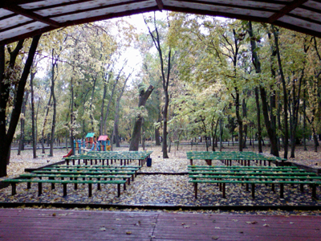
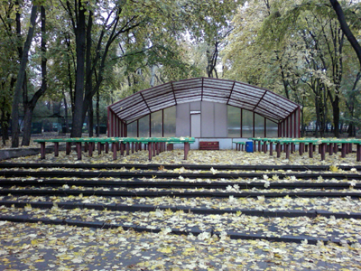
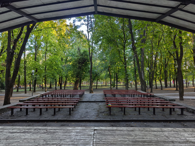
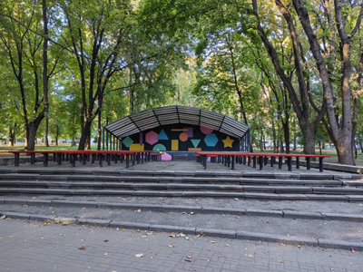
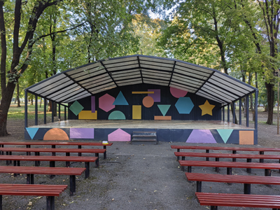
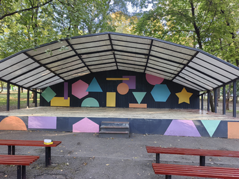

Сценка в парке им. Октябрьской Революции




Сценка находится в одном из наиболее крупных и популярных парков Ростова-на-Дону. Иногда на праздники здесь проводятся выступления официальных творческих коллективов. Нередко это место используется ролевиками, толкиенистами и другими неформальными объединениями по интересам для их собственных собраний и мероприятий. Ну а в остальное время здесь просто отдыхают обычные люди, частенько компаниями.
Место располагает: находится чуть в стороне от основных аллей парка, там никто никому особо не мешает, есть собственно сценка для каких-то выступлений и есть большое количество близко расположенных друг к другу лавочек, на которых удобно разместиться компанией. С другой стороны парк находится в центре города и до него удобно добираться.
Когда-то я сам активно вращался в среде неформалов. У нашей компании был свой форум в интернете и периодически мы собирались, как говорится, в реале. Частым местом наших сходок был парк Революции. Мы встречались у фонтана возле центрального входа, и когда компания собиралась шли к сценке. Иногда просто там сидели общались. Иногда тоже проводили какие-то свои мероприятия. Например, у нас было что-то вроде спортивного фестиваля. Мы соревновались в разных активностях: перехват футбольного мяча, стрельба из водяного пистолета по мишеням и т.п. А однажды был даже турнир по шахматам. Хотя проходил он не на сценке, а в другой части парка. Так что, если вы все еще думаете, что все неформалы пьяные оборванцы — вы зря так думаете, здесь тоже есть культурное общество.




С осени 2010 года, когда было сделано первое фото, территория вокруг изменилась не слишком сильно. Подросли и окрепли деревья: сейчас сам смотрю на фотографии и кажется, что в 2026 году кроны стали заметно пышнее, хотя оба фото сделаны осенью. Убрали детскую площадку. Сценка не в первый раз с тех пор сменила «окраску». Место поддерживают в нормальном и чистом состоянии: время от времени красят лавочки и меняют узоры на самой сценке. Там всегда приятно посидеть, отдохнуть, посмотреть на деревья. Лавочек довольно много, и они вмещают несколько компаний и отдельных людей так, что никто никому особо не мешает.
А еще благодаря тому, что вокруг много пышных деревьев, там обитают белки. Если людей поблизости не слишком много, они спускаются с деревьев. Действуя осторожно, можно их покормить. Но не у всех получается, здешние белки сохраняют осторожность и не бегут к людям со всех ног.



